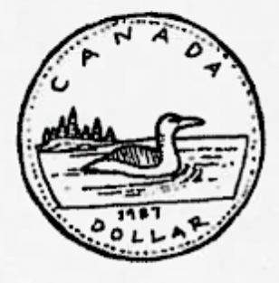

2016 SIN Problem 1
Question
All grown up, Little Willie (now Big Will) works for the Canadian centrla bank. Looking to find other uses for the sagging loonie, Big Will proposes a new system of units, in which all physical quantities are measured in Canadian dollars (CAD). Based on his yearly salary, Big Will sets \(1\) year = \(50,000\) CAD. Based on the mass of the loonie coin, he sets \(6.27\) grams = \(1\) CAD. Finally, based on the cost of his daily cab ride to work, he sets \(10\) km = \(20\) CAD. What is Big Will's weight in the new units, if his mass in the ordinary SI units is \(80 \) kg? \(\textbf{(A) } 1.28 \times 10^3 \text{ CAD} \qquad\textbf{(B) } 4.98\times 10^5 \text{ CAD}^{-1} \qquad\textbf{(C) } 4.98\times 10^5\qquad\textbf{(D) } 9.96\times 10^5 \text{ CAD} \qquad\textbf{(E) } 9.96\times 10^5\)
Solution
Big Will's mass is given by: $$80 \text{ kg} \cdot \frac{1000 \text{ g}}{1\text{ kg}} \cdot \frac{1 \text{ CAD}}{6.27\text{ g}} = 12759 \text{ CAD}$$ The acceleration due to gravity is given by: $$\frac{9.81 \text{ m}}{1\text{ s}^2} \cdot \frac{1 \text{ km}}{1000 \text{ m}} \cdot \frac{20 \text{ CAD}}{10\text{ km}} \cdot \left( \frac{60\text{ s}}{1 \text{ min}} \cdot \frac{60 \text{ min}}{1 \text{ h}} \cdot \frac{24 \text{ h}}{1 \text{ day}} \cdot \frac{365 \text{ day}}{1\text{ y}} \cdot \frac{1 \text{ y}}{50000 \text{ CAD}} \right)^2 = 78049.8744 \text{ CAD}^{-1} $$ Multiplying the two together gets us: \(12759\text{ CAD} \cdot 78049.8744 \text{ CAD}^{-1} = \boxed{\textbf{(E) } 9.96\times 10^5}\). Note that this is a dimensionless quantity.